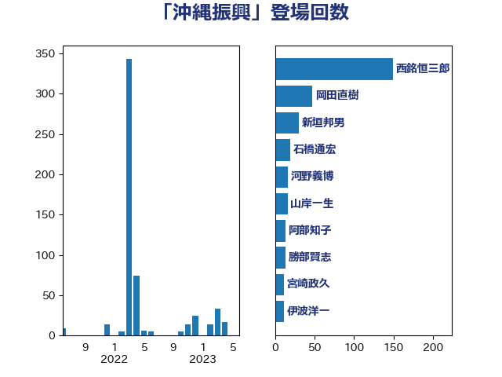

単語「沖縄振興」

| 西銘恒三郎 | 自由民主党 | 149 回 |
| 河野太郎 | 自由民主党 | 34 回 |
| 新垣邦男 | 立憲民主党 | 28 回 |
| 伊波洋一 | 無所属 | 16 回 |
| 山岸一生 | 立憲民主党 | 16 回 |
| 河野義博 | 公明党 | 16 回 |
| 勝部賢志 | 立憲民主党 | 13 回 |
| 宮崎政久 | 自由民主党 | 13 回 |
| 紙智子 | 日本共産党 | 13 回 |
| 阿部知子 | 立憲民主党 | 13 回 |
| ながえ孝子 | 無所属 | 10 回 |
| 青木一彦 | 自由民主党 | 10 回 |
| 岸田文雄 | 自由民主党 | 8 回 |
| 長友慎治 | 国民民主党 | 8 回 |
| 國場幸之助 | 自由民主党 | 7 回 |
| 赤嶺政賢 | 日本共産党 | 7 回 |
| 大島敦 | 立憲民主党 | 6 回 |
| 橘慶一郎 | 自由民主党 | 6 回 |
| 沢田良 | 日本維新の会 | 6 回 |
| 福山哲郎 | 立憲民主党 | 6 回 |
| 藤井比早之 | 自由民主党 | 6 回 |
| 金城泰邦 | 公明党 | 6 回 |
| 今井絵理子 | 自由民主党 | 5 回 |
| 宗清皇一 | 自由民主党 | 5 回 |
| 島尻安伊子 | 自由民主党 | 5 回 |
| 黄川田仁志 | 自由民主党 | 5 回 |
| 杉本和巳 | 日本維新の会 | 4 回 |
| 牧野たかお | 自由民主党 | 4 回 |
| 平木大作 | 公明党 | 3 回 |
| 比嘉奈津美 | 自由民主党 | 3 回 |
| 玄葉光一郎 | 立憲民主党 | 3 回 |
| 細田博之 | 自由民主党 | 3 回 |
| 鈴木宗男 | 日本維新の会 | 3 回 |
| 高木啓 | 自由民主党 | 3 回 |
| あべ俊子 | 自由民主党 | 2 回 |
| 吉田豊史 | 日本維新の会 | 2 回 |
| 和田政宗 | 自由民主党 | 2 回 |
| 小渕優子 | 自由民主党 | 2 回 |
| 有村治子 | 自由民主党 | 2 回 |
| 松村祥史 | 自由民主党 | 2 回 |
| 榛葉賀津也 | 国民民主党 | 2 回 |
| 石井苗子 | 日本維新の会 | 2 回 |
| 石橋通宏 | 立憲民主党 | 2 回 |
| 菅義偉 | 自由民主党 | 2 回 |
| 野村哲郎 | 自由民主党 | 2 回 |
| 鈴木俊一 | 自由民主党 | 2 回 |
| 伊藤忠彦 | 自由民主党 | 1 回 |
| 前原誠司 | 国民民主党 | 1 回 |
| 山東昭子 | 自由民主党 | 1 回 |
| 川合孝典 | 国民民主党 | 1 回 |
| 平口洋 | 自由民主党 | 1 回 |
| 手塚仁雄 | 立憲民主党 | 1 回 |
| 杉田水脈 | 自由民主党 | 1 回 |
| 根本匠 | 自由民主党 | 1 回 |
| 森屋宏 | 自由民主党 | 1 回 |
| 武井俊輔 | 自由民主党 | 1 回 |
| 武部新 | 自由民主党 | 1 回 |
| 猪口邦子 | 自由民主党 | 1 回 |
| 田嶋要 | 立憲民主党 | 1 回 |
| 秋葉賢也 | 自由民主党 | 1 回 |
| 篠原豪 | 立憲民主党 | 1 回 |
| 西村智奈美 | 立憲民主党 | 1 回 |
| 金田勝年 | 自由民主党 | 1 回 |
| 音喜多駿 | 日本維新の会 | 1 回 |
| 麻生太郎 | 自由民主党 | 1 回 |